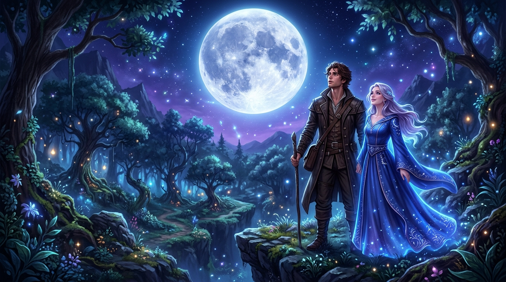
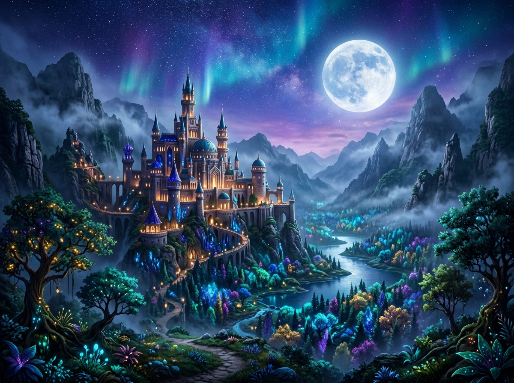

Moonlight & Magic
A Fantasy Romance Story
"Some destinies are written by magic, others by the heart."
Kisah takdir antara Arka, seorang pemuda pengembara dari dunia fana, dan Elara, penyihir muda penjaga kerajaan rahasia. Ketika Moon Crystal yang suci lenyap ditelan kegelapan, perjalanan menelusuri hutan terlarang mengubah keraguan menjadi ikatan kasih yang abadi di bawah cahaya rembulan.

The Sacred Moon Crystal
Pusaka suci Moon Crystal adalah jantung pelindung kerajaan dari bayangan kegelapan kuno. Mantra pelindung Luna Aeterna hanya dapat dibangkitkan oleh dua hati yang seirama.
Hidden Realm of Celesta
Kerajaan magis yang tersembunyi berabad-abad di balik kabut tebal hutan purba, tempat di mana cahaya bintang menyentuh bumi dan sihir mengalir dalam tiap hembusan angin.
Pure Romance & Destiny
Perjalanan dua jiwa yang saling melengkapi—dari ketidakpercayaan menjadi persahabatan tulus, hingga bersemi menjadi cinta yang manis dan murni di tengah marabahaya.
Synopsis & Characters
About The Story
Sebuah kisah petualangan romantis yang memadukan kehangatan emosional dan pesona dunia sihir.
Ketika Takdir Menyatukan Dua Dunia
Malam itu, Arka tersesat di kedalaman hutan lebat yang tak pernah terjamah manusia biasa. Sebuah pancaran cahaya biru keperakan menuntun langkahnya menuju Danau Cermin Rembulan, gerbang rahasia menuju kerajaan mistis Celesta.
Di sanalah ia berjumpa dengan Elara, gadis penyihir berparas jelita dengan mata sewarna batu safir.
Elara mengemban tugas berat: menemukan Moon Crystal yang hilang sebelum gerhana abadi melenyapkan negerinya.
Meskipun awalnya Arka hanya ingin kembali pulang, ketulusan Elara dan keajaiban mantra Astralis Lumina
menggetarkan lubuk hatinya untuk melangkah bersama mengarungi marabahaya.
Pemuda berjiwa pemberani dan penuh rasa ingin tahu. Walau tidak memiliki sihir, ketulusan hati dan tekadnya melindunginya di saat paling genting.
Penyihir muda keturunan garis pelindung Celesta. Dikenal cerdas dan anggun, namun memendam rasa kesepian hingga ia bertemu dengan Arka.

Table of Contents
Chapters
Pilih chapter dan nikmati kisah petualangan magis Arka dan Elara.

Chapter 1: The Girl Beneath the Moon
Tersesat dalam kegelapan malam, Arka mengikuti jejak pendar biru keperakan hingga tiba di tepian danau ajaib. Di bawah ranting pohon willow bercahaya, ia bertemu dengan Elara—seorang penyihir yang mengubah pandangannya tentang dunia nyata.

Chapter 2: The Magic Between Us
Memasuki Hutan Siluet Abadi, Arka dan Elara menghadapi marabahaya kabut bayangan.
Di altar kuno, mereka membangkitkan Moon Crystal dengan mantra suci Luminis Coniunctio,
menyelamatkan kerajaan dan mengakui perasaan yang bersemi di antara mereka.